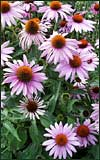

Инфекции верхних дыхательных путей (ВДП) очень часто встречаются в детском возрасте. Препараты растения эхинацея пурпурная (Echinacea purpurea) широко используются в терапии инфекций ВДП. Taylor J.A. и соавт. (США) было предпринято исследование с целью определить, вызывает ли применение препаратов эхинацеи снижение продолжительности и/или выраженности симптомов инфекций ВДП у детей, и оценить безопасность данного средства.
Эхинацея пурпурная (Echinacea purpurea) - лекарственное растение, препараты которого широко используются в терапии инфекций верхних дыхательных путей (ВДП). Taylor J.A. и соавт. (США) исследовали влияние эхинацеи на снижение продолжительности и/или выраженности симптомов инфекций ВДП у детей. В рандомизированном двойном слепом плацебо-контролируемом исследовании, проходившем с 2000 по 2002 гг., приняли участие 407 здоровых детей в возрасте от 2 до 11 лет. Дети получали эхинацею или плацебо в качестве средства терапии для не более 3 случаев инфекций ВДП за 4-х месячный период. Препарат применяли с момента возникновения симптомов инфекции, длительность лечения не превышала 10 дней.
В ходе исследования было зафиксировано 707 случаев инфекций верхних дыхательных путей, в терапии 337 из которых использовался препарат эхинацеи, 370 - плацебо. Средняя продолжительность одного случая инфекции составила 9 дней (95% доверительный интервал 8-10 дней); не было отмечено различий в длительности заболевания у детей, получавших препарат эхинацеи по сравнению с плацебо (р=0,89). Также не было выявлено различий при общей оценке тяжести проявления симптомов у пациентов в обеих группах (средняя 33 в обеих группах; р=0,69). Кроме того, не было отмечено значимых различий между 2 группами в максимальной выраженности симптомов и длительности их проявления, длительности повышения температуры и при оценке родителями степени тяжести инфекции. Высыпания на коже наблюдалось у 7,1% пациентов, получавших эхинацею, по сравнению с 2,7% в группе плацебо (р=0,008).
Таким образом, препараты эхинацеи нельзя считать эффективным средством терапии инфекций верхних дыхательных путей у детей.
Taylor J.A., Weber W., Standish L., Quinn Н., Goesling J., McGann M., et al.
Efficacy and safety of Echinacea in treating upper respiratory tract infections in children.
JAMA 2003; 290(21):2824-7.